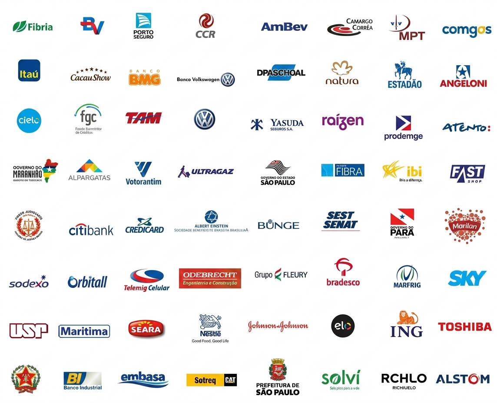

Business Intelligence, Engenharia de Dados e Inteligência Artificial aplicada ao negócio.
AGENDE UMA CONVERSAHá quase três décadas dedicada ao desenvolvimento e à implementação de soluções de Business Intelligence, Analytics e Gestão de Dados para organizações de todos os portes.
Fundada em 1998, a SQLTECH atende hoje quatro países — Brasil, Argentina, Chile e México — a partir de três escritórios: São Paulo, Brasília e Estados Unidos. Em 2025, crescimento de +22%.
Mais de 30.000 usuários atendidos, 150+ clientes e 16 indústrias — sustentados por parcerias com os fabricantes líderes de cada segmento e por uma prática técnica construída desde 1998.
Software SAP vendido sob a marca da SQLTECH.
Programa de Trainee da SQLTECH.
Parceria para Business Analytics da SAP em nuvem.
De bancos e seguradoras à indústria, varejo, saúde e governo — projetos entregues em 16 setores diferentes.

Uma stack que evolui há quase três décadas — sempre na fronteira de dados e analytics.
Análise e interpretação de grandes volumes e variedade de dados — inclusive não estruturados e em alta velocidade.
Do caso de uso à produção — com governança, segurança e integração aos sistemas que você já usa.
VER SOLUÇÕES DE IA →Implementamos IA de ponta a ponta — do caso de uso à produção — com governança, segurança e integração aos sistemas que a empresa já usa.
Do caso de uso à produção — com integração segura e governança em cada etapa.
Rua Padre Estevão Pernet, 718
cj 1512
Tatuapé
São Paulo - SP
contato@sqltech.com.br
Tel: 55-11-3437-7070
Fax: 55-11-3437-7075